HistorialHistory
Cada petición queda en el Historial con su respuesta, el agente que respondió y el registro de cada paso.Every request stays in History with its response, the agent that answered and the log of each step.
Paso a pasoStep by step
- Filtra por estado, origen o grupo, o busca por texto en todo el historial.Filter by status, origin or group, or search by text across the whole history.
- Abre una petición para ver la respuesta y su «Registro», con cada paso y su hora.Open a request to see the response and its “Log”, with every step and its time.
- Si falló, corrige la causa y pulsa «Reintentar».If it failed, fix the cause and click “Retry”.
Qué verás en pantallaWhat you will see on screen
- FiltrosFilters Aquí filtras las peticiones por estado o por origen, o buscas por texto.Here you filter requests by status or origin, or search by text.
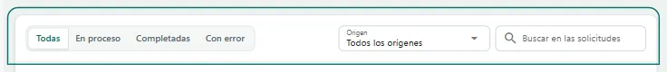
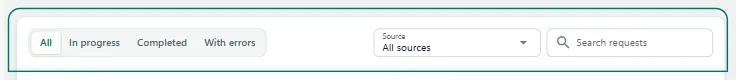
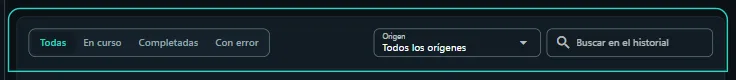
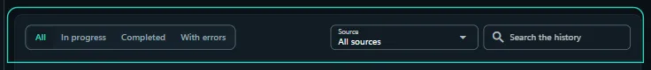
- La lista de peticionesThe request list Cada fila es una petición: su estado, el mensaje, el agente y el modelo, el origen y los tokens. Si aún no hay ninguna, saldrán aquí en cuanto envíes la primera.Each row is a request: its status, the message, the agent and model, the origin and the tokens. If there are none yet, they show up here as soon as you send the first one.
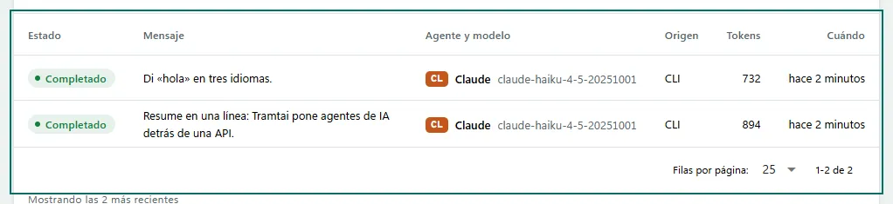
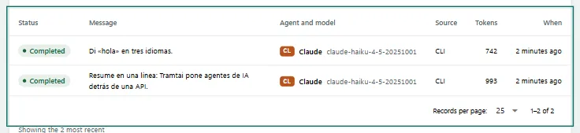
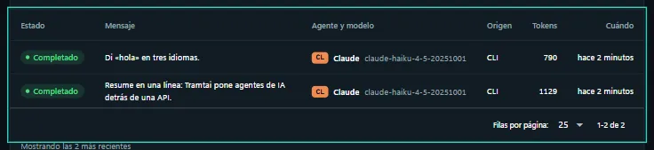
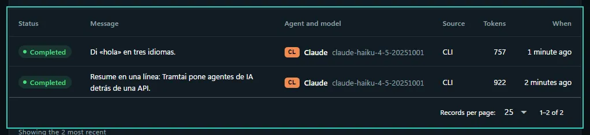
- El detalleThe detail Al pulsar una fila se abre su detalle: el mensaje, la respuesta, el registro paso a paso y, si algo falló, qué hacer.Clicking a row opens its detail: the message, the response, the step-by-step log and, if something failed, what to do.
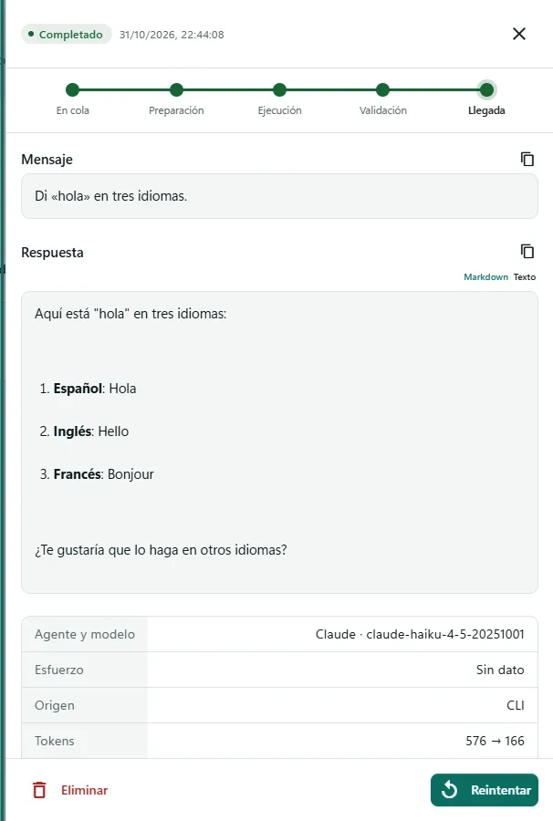
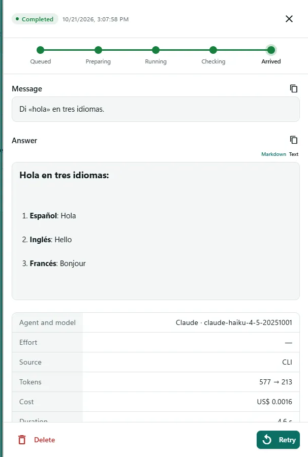
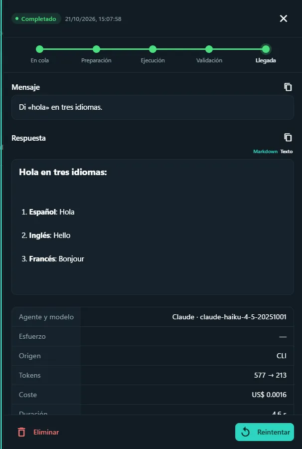
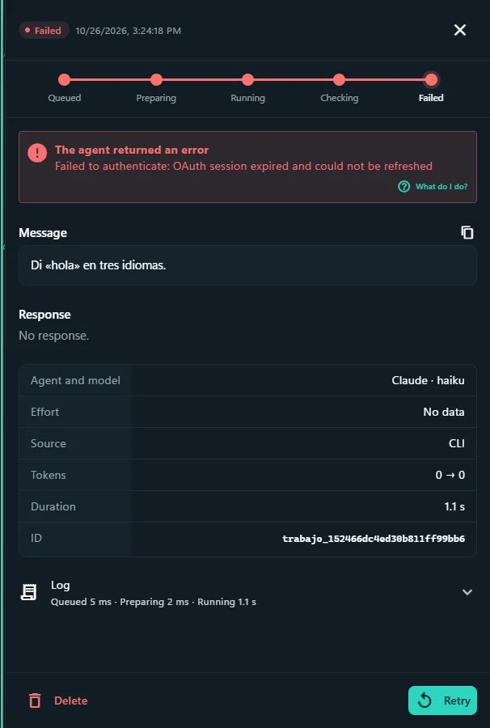


PreguntasQuestions
¿Qué significan Completadas, En curso y Con error?What do Completed, In progress and With errors mean?
Completadas recibieron respuesta; En curso esperan o se están ejecutando; Con error fallaron o se interrumpieron.Completed got a response; In progress are waiting or running; With errors failed or were interrupted.
¿Puedo seguir una petición en vivo?Can I follow a request live?
Sí: pulsa su tranvía en el mapa de Inicio y verás su ruta (cola, preparación, ejecución, validación y llegada) mientras avanza.Yes: click its tram on the Home map and you will see its route (queue, preparation, running, validation and arrival) as it moves.
¿Cómo veo cuánto tardó cada paso?How do I see how long each step took?
En «Registro», bajo la respuesta o en el detalle: cada paso con su hora y, arriba, cuánto duró cada etapa.In “Log”, under the response or in the detail: every step with its time and, at the top, how long each stage took.
¿Cómo veo lo que procesa mientras desarrollo?How do I watch what it processes while developing?
«tramtai servicio registro -f» muestra en vivo una línea por petición: agente, modelo, duración, tokens y la API de origen.“tramtai servicio registro -f” shows one live line per request: agent, model, duration, tokens and the API it came from.
¿Puedo ver el servicio en primer plano?Can I run the service in the foreground?
Sí: detén el servicio y ejecuta «tramtai servicio iniciar --abrir»: corre con el registro a la vista, abre la app y Ctrl+C lo detiene.Yes: stop the service and run “tramtai servicio iniciar --abrir”: it runs with the log in view, opens the app and Ctrl+C stops it.
¿Cómo borro los datos de prueba?How do I delete test data?
En Ajustes, «Borrar datos» elimina el historial y las APIs por aplicación. También puedes vaciar el Historial.In Settings, “Delete data” removes the history and the per-app APIs. You can also empty History.